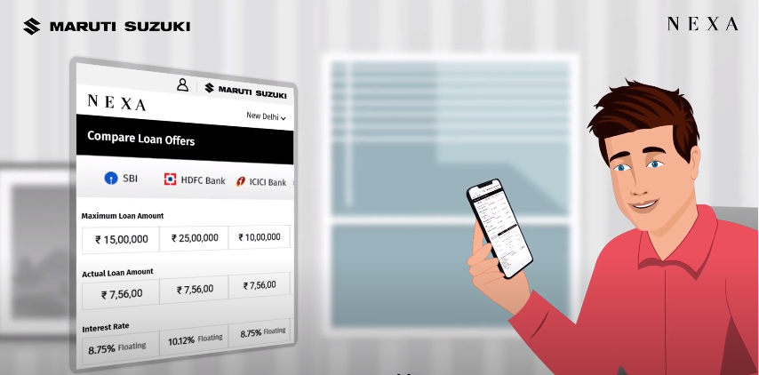
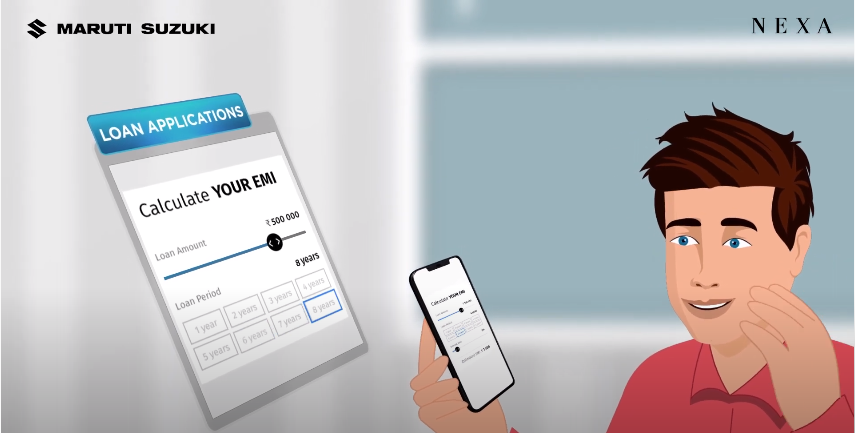

What is the Easiest Way to Finance Your Car?
Maruti Suzuki offers an innovative solution in the form of the Maruti Suzuki Smart Finance platform
for an easy car loan application process for its customers. Maruti Suzuki is the first OEM in India to offer
such a service where customers can apply for a car loan online, from anywhere, at their convenience.
Why Choose Maruti Suzuki Smart Finance
How car loan applications work in the traditional way can be highly time consuming and inconvenient. Often, they
require multiple bank visits, multiple calculations for loans from various providers, and may even prove to be
greatly inefficient, especially when you have incomplete information on the various aspects related to the
financing, such as the interest fees, foreclosure clause, loan tenure, EMIs, etc. Maruti Suzuki Smart Finance
aims to provide a reliable and comfortable customer experience with complete car finance solutions. Maruti
Suzuki Smart Finance allows for a hassle-free car finance process, right from looking for various offers and
preparing the documents to getting the documents verified and getting approval for the loan. It facilitates EMI
calculations & customisations as well with an EMI Calculator which gives an approximate value of monthly
instalments that you will have to pay, based on the amount of down payment and interest rate.
Maruti Suzuki Smart Finance is a personalised approach to making your car buying experience easy and to ensure a
seamless customer journey for availing the most suitable loan. You can now get your NEXA car financed in a
simple, easy, and transparent manner with Maruti Suzuki Smart Finance as your
digital one stop shop for all your
financial needs. Maruti Suzuki Smart Finance allows you to choose the best of everything, starting with lower
interest rates and loan tenures based on your needs. If you want to get a car loan online, a Maruti Suzuki car
loan is the best way to go for your brand-new NEXA car.

The Car Loan Procedure
With Maruti Suzuki Smart Finance, you will be able to find the best car loan and loan provider. The easy-to-use
interface offers you a simple 4-step car loan procedure from application to loan disbursal. With Maruti Suzuki
Smart Finance, you can check out different loan providers, calculate your EMI, look through customised loan
options, avail exclusive offers, upload your documents, get them verified, and get the loan disbursed, with just
a few clicks. The key advantages of Maruti Suzuki Smart Finance include:

- Pre-Approved Car Loans
- Multiple Bank Options
- Customisable EMI
Maruti Suzuki Smart Finance ensures that you do not have to compromise at any point during your car loan
approval process. You get the option to choose from multiple financers and get access to a range of interest
rate and down payment options. This essentially means that you have a lot of options to choose from when
financing your new car. The platform promises complete comfort in their end-to-end process with quick to avail
pre-approved loans, custom-curated personalised offers, complete transparency on fees and charges, access to
digital sanction letters, among other benefits.
CONTACT US: 1800 102 1800
contact@maruti.co.in
©MARUTI SUZUKI INDIA LIMITED